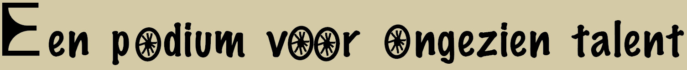

Bij GreenGlide werken mensen die elders moeilijk aan werk komen. Wij geloven dat iedereen waardevolle talenten heeft. Ons team bestaat uit mensen die sterk, rustig (of juist energiek), eigenzinnig, eerlijk of bijzonder nauwkeurig zijn. Al deze eigenschappen dragen bij aan het maken van stijlvolle en duurzame designfietsen, van wat ooit als schroot werd beschouwd.
vragen geen specifieke functie-eisen en kijken niet naar cv's, maar geven vertrouwen. We moedigen onze fietsenmakers ook aan om een erkende opleiding tot fietstechnicus te volgen. Met een diploma zijn onze makers klaar voor een duurzame toekomst.
